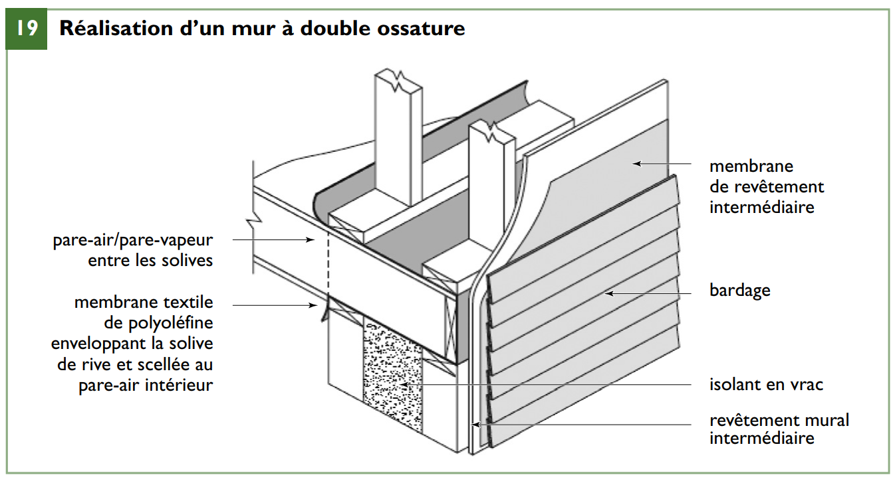
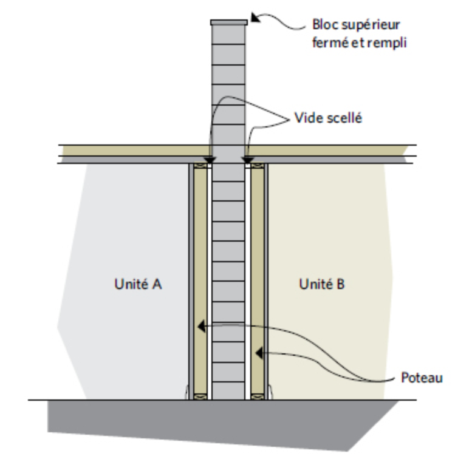
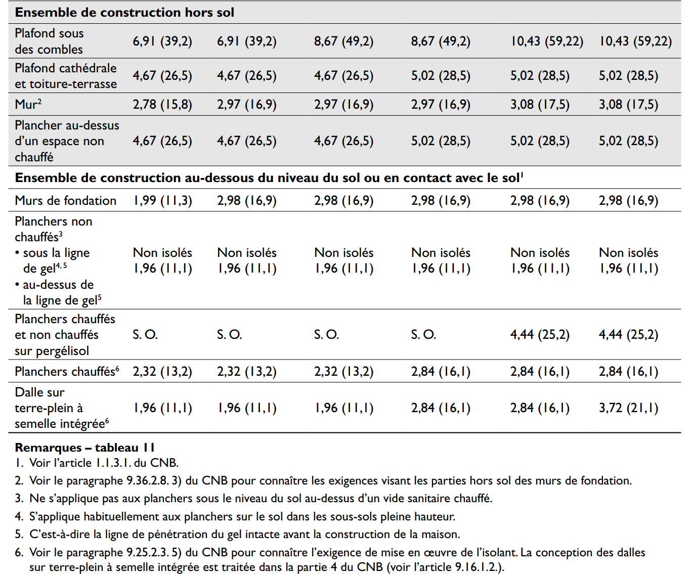
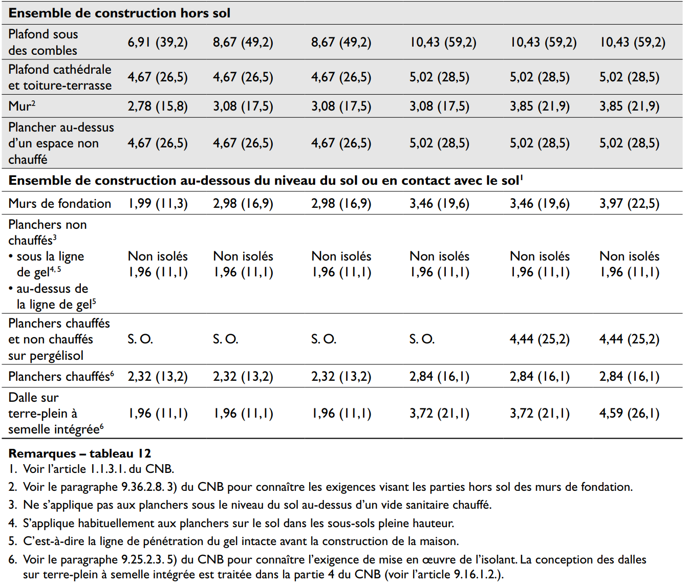
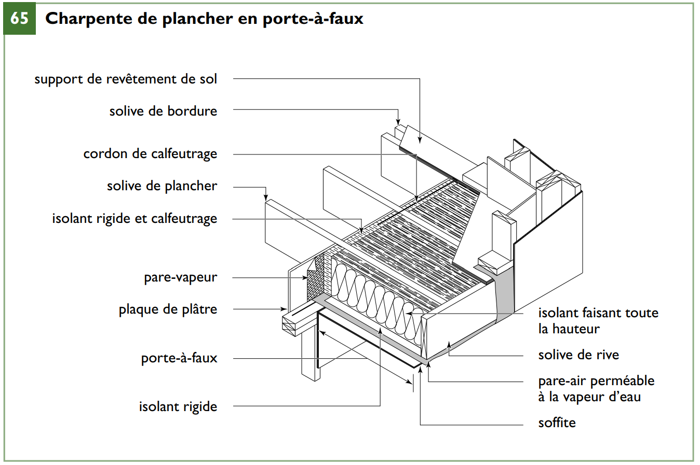

Pont thermique
Activer le mode plein écran
Section 5.3 du Code de construction du Québec
A-5.3. Transferts de chaleur.
En guise de solution aux problèmes de santé et de sécurité, la section 5.3. prescrit des degrés de résistance thermique pour réduire au minimum la condensation qui se forme sur les éléments de séparation ou à l’intérieur de ceux-ci et garantir des conditions thermiques appropriées à l’utilisation des bâtiments. Là où ils existent, les règlements sur l’économie d’énergie précisent les degrés de résistance thermique propres à favoriser l’efficacité énergétique des bâtiments ou prescrivent des niveaux d’efficacité énergétique qui correspondent à ces degrés de résistance thermique. Si les degrés de résistance thermique prescrits à la partie 5 sont supérieurs à ceux des règlements, les dispositions de la partie 5 ont préséance.
Résistance thermique des ensembles
Extraits du Code de construction du Québec, Division B, Partie 5
5.3.1.1. Résistance exigée au transfert de chaleur
(Voir l’annexe A.)
-
Sous réserve du paragraphe 2), tout composant ou ensemble de construction qui doit être intentionnellement soumis à des écarts de température doit comporter des matériaux qui s’opposent au transfert de chaleur ou des moyens pour dissiper la chaleur transférée conformément aux autres exigences de la présente sous-section.
-
L’installation de matériaux qui s’opposent au transfert de chaleur, conformément aux autres exigences de la présente sous-section, n’est pas exigée s’il peut être démontré que le libre transfert de chaleur n’aura pas d’effets indésirables sur l’un ou l’autre des éléments suivants :
a) la santé ou la sécurité des occupants;
b) l’utilisation prévue du bâtiment; ou
c) le fonctionnement des installations techniques.
A-5.3.1.1. Résistance exigée au transfert de chaleur.
La réduction des déperditions thermiques est exigée partout où l’on veut maintenir un écart de température de part et d’autre de l’ensemble de construction. Ce caractère intentionnel est important pour faire la distinction avec les écarts de température normaux entre les milieux intérieur et extérieur.
La température intérieure d’un entrepôt non chauffé, par exemple, différera souvent de la température extérieure du fait du rayonnement solaire, du rayonnement nocturne et du retard de variation de la température dû à la masse thermique du bâtiment et de son contenu. Si cet écart de température n’est pas intentionnel, aucune mesure spéciale en vue de réduire les déperditions thermiques n’est exigée.
Si l’entrepôt est chauffé ou refroidi, ce qui rend intentionnel l’écart de température, certaines mesures en vue de réduire les déperditions thermiques devraient être prises.
Il est à noter, toutefois, que dans bien des cas, comme avec les espaces intérieurs contigus, il y aura un faible écart de température intentionnel. Dans ces cas, les mesures en vue de réduire les déperditions thermiques peuvent être minimes; à la limite, un élément de séparation intérieur standard pourrait suffire. En d’autres termes, les matériaux typiquement utilisés dans la construction de cloisons peuvent fournir la séparation requise afin de satisfaire aux exigences de la section 5.3., sans qu’il soit nécessaire d’ajouter d’autres matériaux qui sont généralement considérés comme des matériaux isolants.
Propriétés des matériaux
Extraits du Code de construction du Québec, Division B, Partie 5
5.3.1.2. Propriétés relatives au transfert ou à la dissipation de la chaleur
(Voir l’annexe A.)
- Les matériaux et composants mis en œuvre pour s’opposer au transfert de chaleur ou les moyens pour dissiper la chaleur doivent offrir un degré de résistance ou de dissipation suffisant, compte tenu des conditions de part et d’autre de l’élément de séparation, afin qu’il soit possible :
a) de réduire au minimum la formation de condensation du côté chaud de ces composants ou ensembles de construction;
b) de concert avec les autres matériaux et composants de l’ensemble de construction, de réduire au minimum la condensation à l’intérieur des composants ou ensembles de construction;
c) de concert avec les systèmes installés pour la climatisation des espaces, de maintenir les températures intérieures de calcul convenant à l’usage prévu; et
d) de réduire au minimum la formation de bancs de glace sur les toits en pente. (Voir l’annexe A.)
5.10.2.4. Rendement thermique
-
Les fenêtres, les portes et les lanterneaux doivent être conformes aux exigences de rendement thermique énoncées à la section 5.3. (voir la note A-5.3.1.2.).
-
Sous réserve du paragraphe 3), tous les vitrages à cadre métallique qui séparent un espace climatisé intérieur d’un espace intérieur non climatisé ou de l’extérieur doivent comporter une coupure thermique afin de réduire au minimum la condensation.
-
Les vitrages à cadre métallique n’ont pas à satisfaire aux exigences du paragraphe 2) s’ils sont :
a) des contre-fenêtres ou des contre-portes; ou
b) des fenêtres ou des portes qui doivent avoir un degré pare-flammes. (Voir l’annexe A.)
A-5.3.1.2. Propriétés des matériaux et composants et condensation.
En règle générale, la protection totale contre la condensation n’est ni nécessaire ni même réalisable au stade de la conception. C’est pourquoi la partie 5 propose uniquement des moyens de réduire la condensation au minimum. Des mesures visant à éviter l’apparition trop fréquente de condensation, ou son accumulation, ou à assurer une évaporation rapide, permettront d’empêcher la détérioration des matériaux et la formation de moisissures.
La norme harmonisée AAMA/WDMA/CSA 101/I.S.2/A440, « Norme nord-américaine sur les fenêtres (NAFS)/Spécification relative aux fenêtres, aux portes et aux lanterneaux », indique des méthodes pour la détermination de la résistance à la condensation et du coefficient de transmission thermique des fenêtres, des portes et des lanterneaux. La portée de cette norme incorporée par renvoi dans la sous-section 5.10.2. inclut les lanterneaux et les puits de lumière tubulaires. Les puits des lanterneaux et les puits de lumière tubulaires qui traversent des espaces non climatisés peuvent devenir l’élément de séparation des milieux et, par conséquent, doivent être conformes aux exigences de la partie 5.
A-5.3.1.2. 1) Utilisation d’un isolant thermique ou d’une installation mécanique pour le contrôle du milieu.
Pour éviter la formation de condensation du côté chaud d’un ensemble de construction ou à l’intérieur de celui-ci (sur le pare-vapeur) et permettre le maintien de conditions intérieures convenant à l’usage prévu, le degré de résistance thermique requis est fonction des facteurs suivants :
-
l’usage;
-
la température de l’air extérieur de calcul;
-
la température de l’air et l’humidité relative intérieures de calcul;
-
la puissance de l’installation de chauffage; et
-
les moyens de diffuser la chaleur.
Ainsi, il sera possible de maîtriser la condensation sur la surface intérieure d’un mur extérieur si la température de la surface intérieure ne chute pas en deça du point de rosée de l’air intérieur. Par exemple, si l’air intérieur est de 20 °C et l’humidité relative de 35 %, le point de rosée sera de 4 °C. Si l’air intérieur est de 20 °C et l’humidité relative de 55 %, le point de rosée sera de 11 °C.
Si la température extérieure de calcul est douce, comme dans le sud de la région côtière de la Colombie-Britannique, il est fort possible que l’humidité relative à l’intérieur pendant la saison de chauffe soit de l’ordre de 55 %. Pour une température extérieure de -7 °C, la valeur RSI des matériaux constituant l’élément de séparation pourra être de 0,082 seulement pour éviter la formation de condensation sur la surface intérieure.
Selon les propriétés particulières du matériau, un contreplaqué de 10 mm pourrait suffire à obtenir cette valeur RSI. Il ne serait donc pas nécessaire de poser des matériaux généralement reconnus comme isolants thermiques seulement dans le but de limiter la condensation du côté chaud de l’enveloppe du bâtiment.
Cependant, dans la plupart des régions du pays, les températures extérieures de calcul sont beaucoup plus basses; par exemple, elle est de -20 °C à Toronto et à Charlottetown, et de -50 °C à Dawson. Dans ces situations, pour maintenir les températures du côté intérieur du pare-vapeur au-dessus du point de rosée, il faudra poser de l’isolant ou augmenter l’apport de chaleur à l’élément de séparation des milieux différents. L’apport direct de chaleur sur toute la surface de l’élément de séparation est généralement difficilement applicable. Il sera peut-être impossible d’assurer l’apport indirect de chaleur sans élever les températures intérieures au-dessus de la zone de confort. Quoiqu’il en soit, l’accroissement de l’apport de chaleur donnerait souvent lieu à une facture énergétique exorbitante.
En plus de maîtriser la formation de condensation, les températures des surfaces intérieures doivent être assez chaudes pour éviter que les occupants ne soient inconfortables en raison d’une perte excessive de chaleur par rayonnement. L’usage des espaces visés pourrait dicter la pose d’un isolant même là où il n’est pas nécessaire de maîtriser la condensation.
A-5.10.2.4 3) Transfert de chaleur à travers des éléments vitrés ayant un degré de résistance au feu.
Il ne faut pas négliger le pont thermique des éléments vitrés ayant un degré de résistance au feu; des mesures doivent être prises afin de réduire au minimum la condensation, conformément à l’esprit du paragraphe 5.10.2.4. 2).
Installation des matériaux
Extraits du Code de construction du Québec, Division B, Partie 5
5.3.1.3. Emplacement et mise en œuvre des matériaux ayant une résistance thermique
-
Une résistance thermique appropriée doit être prévue à la jonction d’un matériau exigé par l’article 5.3.1.1. et d’un composant, aux endroits où ce matériau est traversé par un élément de conductance élevée ou aux joints de dilatation, de fissuration ou de construction, et s’il y a un risque de condensation à ces jonctions, traversées ou interruptions, de façon à réduire au minimum la condensation à ces endroits.
-
Les matériaux ayant la résistance thermique exigée doivent être suffisamment étanches à l’air ou être mis en œuvre dans l’ensemble de manière à empêcher la circulation de l’air par convection à travers les matériaux et autour de ceux-ci (voir l’annexe A).
-
L’isolant thermique en polyuréthane appliqué au jet doit être mis en œuvre conformément à la norme CAN/ULC-S705.2, « Isolant thermique en mousse de polyuréthane rigide pulvérisée, de densité moyenne – Application ».
A-5.3.1.3. 2) Emplacement des matériaux ayant une résistance thermique.
L’efficacité d’un matériau ayant une résistance thermique ne doit pas être entravée par la circulation de l’air par convection à travers le matériau ou autour de celui-ci. Par conséquent, le matériau doit :
- soit faire partie intégrante du système d’étanchéité à l’air servant de protection principale contre les fuites d’air;
- soit être mis en œuvre de manière à faire corps avec un élément continu de faible perméabilité à l’air.
Prévention et protection
Extraits du Code de construction du Québec, Division B, Partie 9
9.23.2.2. Prévention de la pourriture
-
L’extrémité d’une poutre, d’une solive ou d’un autre élément d’ossature en bois qui est encastré dans la maçonnerie ou le béton doit subir un traitement préventif contre la pourriture si la face inférieure de l’élément se trouve au niveau du sol ou au-dessous de ce niveau ou il faut prévoir un espace d’air de 12 mm à l’extrémité et sur les côtés de l’élément.
-
L’espace d’air exigé au paragraphe 1) ne doit pas être obstrué par de l’isolant, un pare-vapeur ou un matériau étanche à l’air.
9.23.2.3. Protection contre l’humidité
-
Sous réserve du paragraphe 2), les éléments d’ossature en bois qui n’ont pas subi de traitement préventif par injection sous pression et qui reposent sur du béton en contact avec le sol ou avec du remblai doivent être isolés du béton par une membrane de polyéthylène d’au moins 0,05 mm ou par un matériau de couverture en rouleau de type S.
-
La protection contre l’humidité exigée au paragraphe 1) n’est pas nécessaire si l’élément en bois se trouve à au moins 150 mm au-dessus du sol.
Isolation
Il pourrait être avantageux d’augmenter le niveau d’isolation des murs extérieurs au-delà des exigences minimales du code du bâtiment afin de réduire la consommation d’énergie pour le chauffage et la climatisation et d’améliorer le confort (voir l’illustration suivante)

Pour augmenter la résistance thermique des murs et diminuer les ponts thermiques causés par les éléments d’ossature, il suffit d’appliquer un isolant rigide sur l’ossature murale externe.
Un pont thermique se produit lorsqu’un matériau ayant une certaine conductance thermique, comme le bois de charpente, transmet la chaleur à travers l’enveloppe, contournant ainsi l’isolant dans la cavité, ce qui peut réduire considérablement la résistance thermique de l’ensemble mural.
Isolation des murs
Les murs sont la source d’environ 20 p. 100 des pertes thermiques d’une maison. En plus des pertes thermiques par les murs, il y a beaucoup de fissures et d’ouvertures qui permettent aux fuites d’air de s’infiltrer dans la maison ou de s’exfiltrer vers l’extérieur.
Mur de briques double épaisseur
/Attachments/7_1__Mur_de_briques_double_epaisseur.png)
Mur de planches de bois
/Attachments/7-2_Mur_de_planches_de_bois.png)
Construction en blocs de béton, un mur mitoyen et un mur ouvert

Les maisons à ossature revêtue d’un placage en brique ont normalement un vide d’air de 25 à 50 mm (1 à 2 po) entre le mur et les briques, ce qui fait partie du plan de drainage. Il ne faut pas isoler ce vide.
Acier
Les poutres d’acier qui soutiennent les planchers dans certains bâtiments forment un pont thermique si elles se prolongent jusque dans l’enveloppe extérieure du bâtiment, ou jusque dans un garage non chauffé.
Si vous ne couvrez pas d’isolant les 150 premiers centimètres exposés à la chaleur de l’intérieur, l’humidité se condensera sur l’acier froid. À long terme, il peut rouiller.
Les balcons soutenus par des poutres d’acier qui se prolongent sous les planchers intérieurs sont un exemple pertinent de pont thermique. Si leur portion intérieure n’est pas couverte d’un matériau isolant, du givre peut s’y former et des gouttes de condensation s’y déposer. Au fil du temps, l’eau endommagera les matériaux.
Zone climatique
Dans les zones climatiques plutôt clémentes, le niveau de résistance thermique exigé peut être atteint à l’aide d’isolant en matelas inséré entre les poteaux d’ossature (voir l’illustration suivante).
/Attachments/18-emplacement_de_l_isolant.png)
Dans les zones climatiques où la résistance thermique effective exigée ne peut pas être respectée uniquement avec un isolant en matelas dans les cavités murales, ou lorsqu’un niveau d’isolation supérieur est souhaité, il faut ajouter de l’isolant soit du côté intérieur de l’ossature, soit du côté extérieur
Comme l’indiquent les tableaux suivants, le CNB prescrit des valeurs minimales d’isolation pour chaque composant de l’enveloppe du bâtiment selon la zone climatique.
/Attachments/t-11_resistance_thermique_effective(1).png)

/Attachments/t-12_resistance_thermique_effective(1).png)

Extraits du Code de construction du Québec, Division B, Partie 1
1.1.3.1. Valeurs de calcul
-
En vertu du CNB, les données climatiques et sismiques à adopter pour le calcul des bâtiments doivent être conformes aux valeurs déterminées par l’autorité compétente ou, en leur absence, à celles du paragraphe 2) et des données climatiques et sismiques de l’annexe C (voir l’annexe A).
-
Les températures extérieures hivernales de calcul déterminées à partir de l’annexe C doivent être celles indiquées pour janvier à 2,5 % (voir l’annexe A).
A-1.1.3.1. 2) Températures de calcul hivernales.
Les valeurs à 2,5 % spécifiées au paragraphe 1.1.3.1. 2) constituent les températures les moins restrictives. Un concepteur peut choisir d’employer les valeurs à 1 % indiquées à l’annexe C, valeurs qui sont acceptables puisqu’elles dépassent le minimum exigé par le CNB.
Charpente de plancher en porte à faux
L’isolant thermique doit être soigneusement posé sur le dessus du soffite, sous le plancher en porte-à-faux, et remonté contre les solives de rive et de bordure.
Envisagez l’emploi d’une mousse isolante à pulvériser. Posez un pare-vapeur sur le côté chaud de l’isolant, de même qu’un pare-air pour empêcher l’air extérieur de s’infiltrer dans l’assemblage en porte-à-faux.

Cadres de fenêtres à haute efficacité thermique
Le cadre des fenêtres est généralement fait d’aluminium, de vinyle (chlorure de polyvinyle, ou PVC), de bois ou de fibre de verre.
Chacun de ces matériaux offre des caractéristiques particulières pour la fabrication des cadres de fenêtres, mais leur performance technique varie de l’un à l’autre.
Étant donné que l’aluminium est très conducteur (1 000 fois plus que le vinyle, le bois ou la fibre de verre), il accuse une piètre efficacité thermique.
Les cadres en aluminium doivent donc intégrer une coupure thermique faite d’un matériau peu conducteur, comme le PVC ou le nylon, qui améliorera sensiblement leur propriété isolante.
Les cadres faits de bois, de PVC et de fibre de verre présentent la même conductivité peu élevée. Il est toutefois possible d’améliorer les cadres de PVC et de fibre de verre à cet égard en remplissant d’isolant les vides et les lames d’air de ces cadres.
Même si le cadre représente uniquement une faible partie de la superficie totale d’une fenêtre, l’efficacité thermique d’une fenêtre s’accroîtra énormément en faisant un choix approprié
/Attachments/t-13_caractéristiques_thermiques_requises.png)